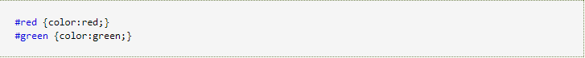
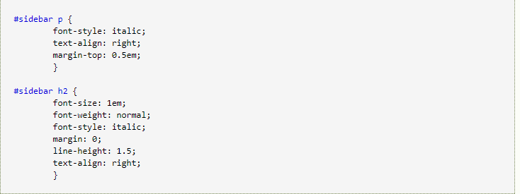

Id selector
The ID selector to "#" to define.like this:

using like this:
it means hello will be red.
Note: the ID attribute can only occur once in each HTML document.
A selector, a variety of uses
Even if the element labeled as sidebar can only appear in the document once,ID selector can also be used many times as a derivative selector.
such as
